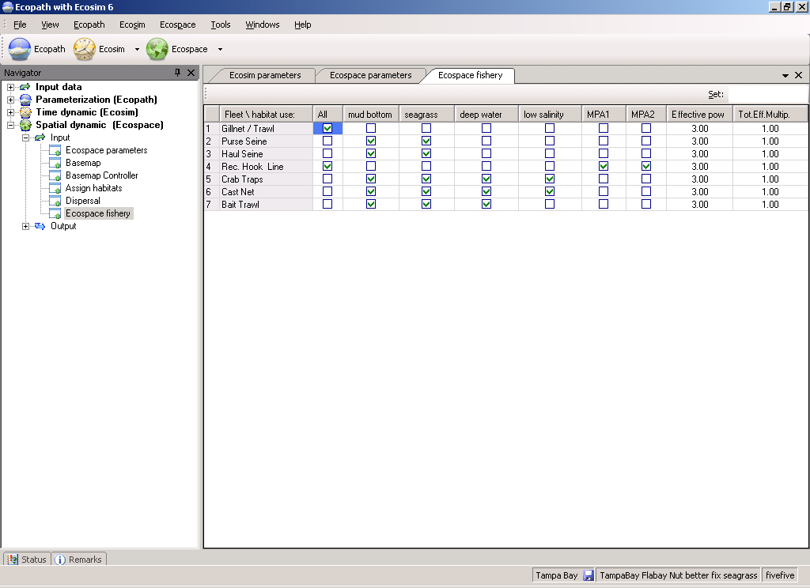

For each fleet indicate where it may operate by clicking:
Effective power: sets relative catchabilities by gear type, treating effort for each gear as starting at base value of 1.0 so that F for the gear (F = qE=Catch/biomass) is 1.0 · q where q is relative catchability. This is to avoid measuring effort in some unnecessary unit. Effective power should be entered as a non-negative parameter, and has a default value of 1.
Total efficiency multiplier: a scaling factor for effort by fleet, it should be non-negative, and has a default value of 1.

Figure 10.9